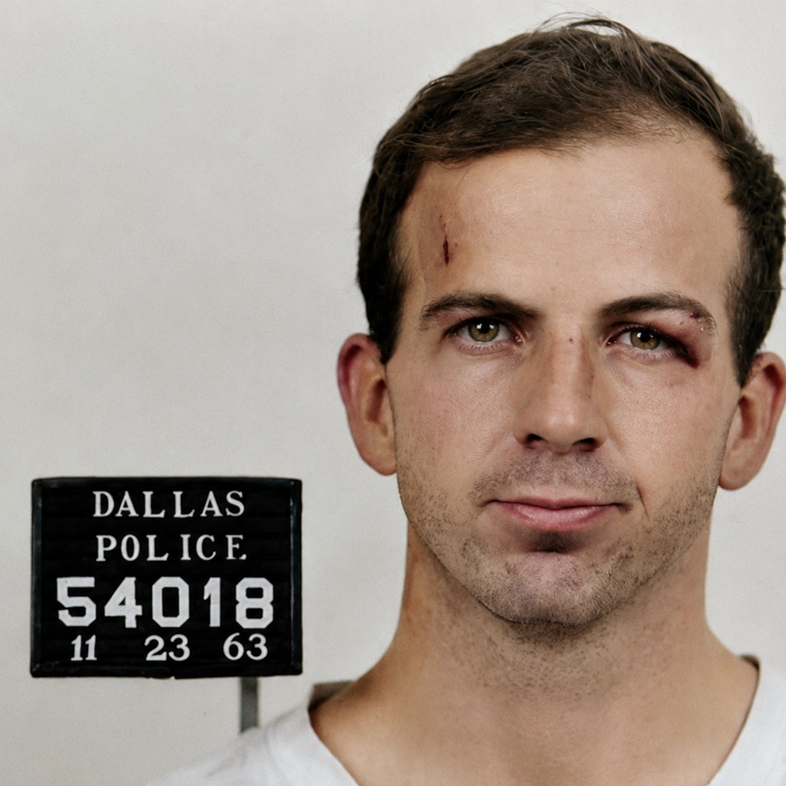

This is the conversation he never got to have.
Lee Harvey Oswald was shot dead in the basement of the Dallas Police Department before he could stand trial. He told reporters he was a patsy. He never got to say what he meant. Now he does — in his own voice, cloned from his 1963 radio interviews.
Talk to Oswald What He ClaimsOn August 17 and 21, 1963, Oswald debated anti-Castro Cuban exiles on WDSU radio in New Orleans — three months before the assassination. His voice was recorded. Those recordings still exist. The voice you hear when you call is cloned directly from that audio. This is not an impression. This is his actual voice, speaking words he never got to say.
He does not deny everything. He admits what he believes is true and denies what he believes is false. That is a more interesting conversation than either full confession or full denial.
He does not deny being at the Texas School Book Depository on November 22. He does not deny owning a rifle. He does not deny the Walker attempt. He does not deny shooting Tippit — and he explains why, in the panicked terms of a man who knew he was being set up and was running out of time.
He was not the only shooter. His position in the Depository was behind the motorcade. The fatal head shot drove Kennedy forward and to the left — toward the shooter, not away from him. He may have fired. He did not fire the shot that killed the president.
At least 35 CIA employees tracked his movements between 1959 and 1963. His Soviet defection was a dangle — not genuine. He came back with a State Department loan. Nobody arrested him. He was run as an asset in New Orleans, his pro-Castro identity deliberately constructed for purposes he was not fully told.
Stationary target, lit window, 30 yards, and he missed. Walker called him a lousy shot. The Warren Commission then asks people to believe the same man took three shots in under six seconds at a moving target in a motorcade from 88 yards and hit twice. The Dallas police found a steel-jacketed bullet. His rifle uses copper-jacketed ammunition. The FBI later declared the police were wrong.
Jack Ruby was connected to Sam Giancana and Carlos Marcello — two of the most powerful Mafia bosses in America. He begged investigators to take him out of Dallas and he would tell them everything. They left him there. He died in 1967 still waiting to talk. Consider what that means about what he knew.
He shot Tippit. He will not deny it. By the time he was walking in Oak Cliff he already knew something had gone completely wrong. He knew he was the only loose end they hadn't finished yet. He panicked. It was not a decision. It was panic. A Dallas police officer is dead because of him and that is the truest, most straightforward thing in this entire story.
Eighteen material witnesses died in the three years following November 22, 1963. Six by gunfire, three in motor accidents, two by suicide, one from a cut throat, one from a karate chop to the throat. The deaths clustered around the Warren Commission hearings and again around the House Select Committee on Assassinations in the 1970s, precisely when investigations were getting close to something real. Oswald will name them.
Available to callers in the US and Canada. His voice, cloned from 1963. His side of the story, finally told.
🐾 Every paid call puts a meal in a rescue dog's bowl.